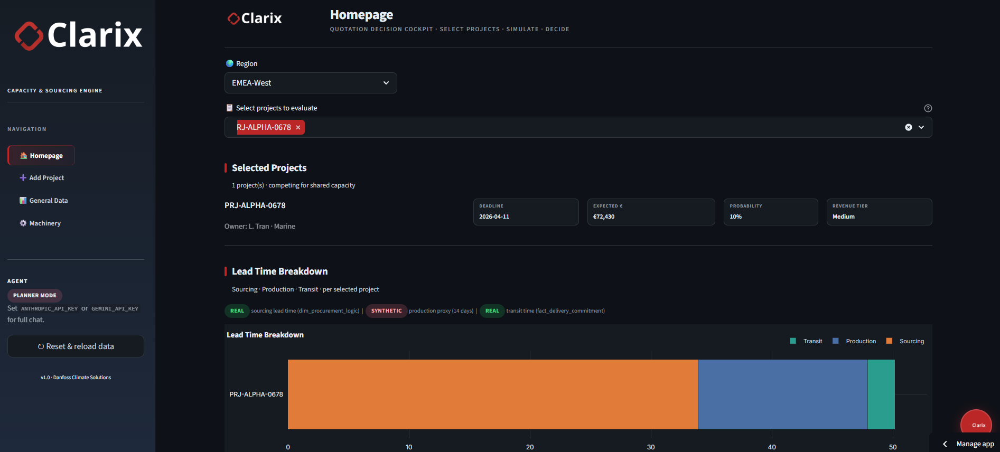
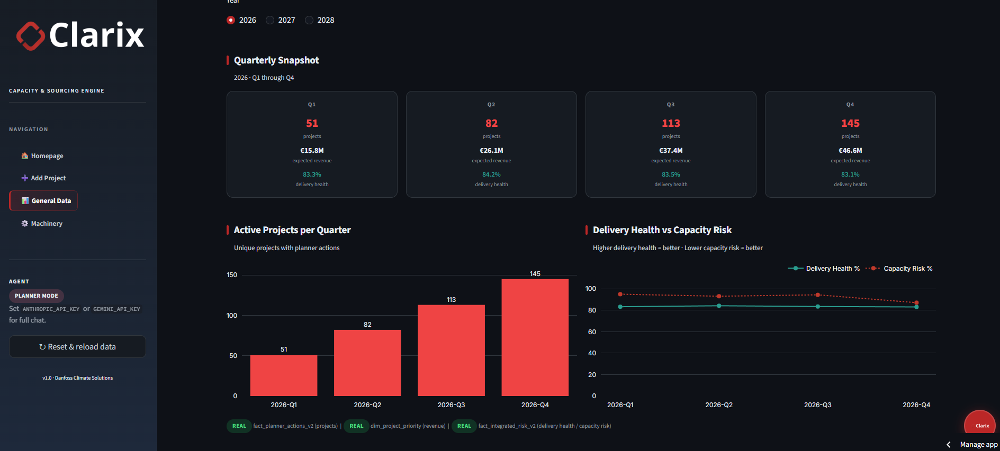
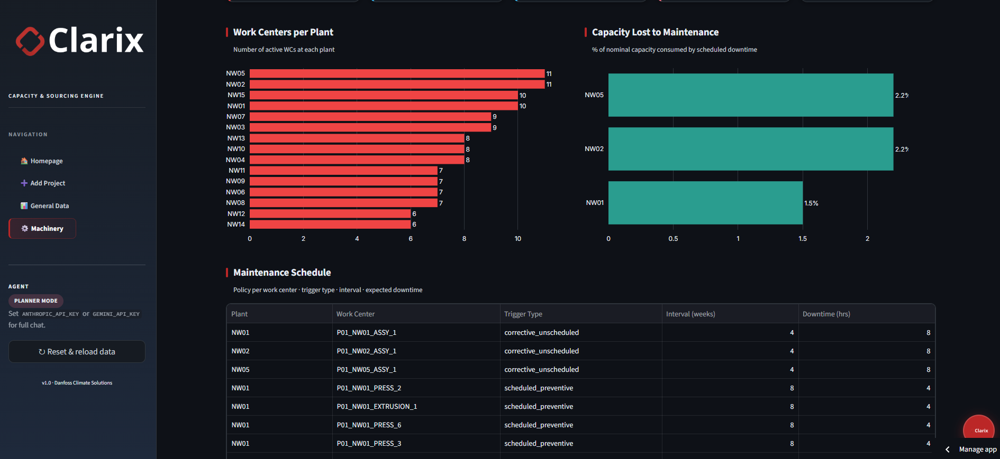
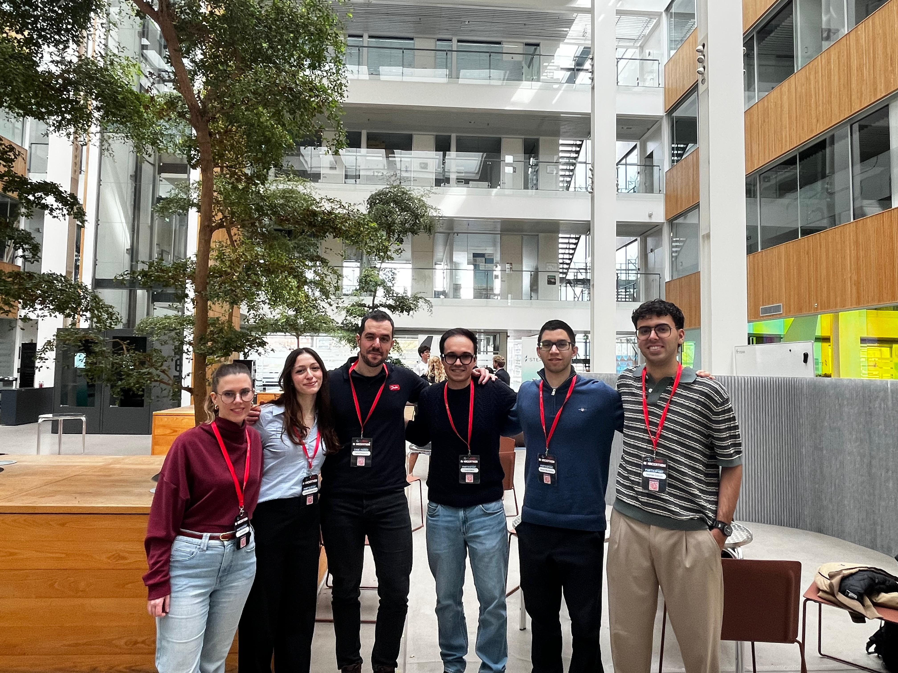
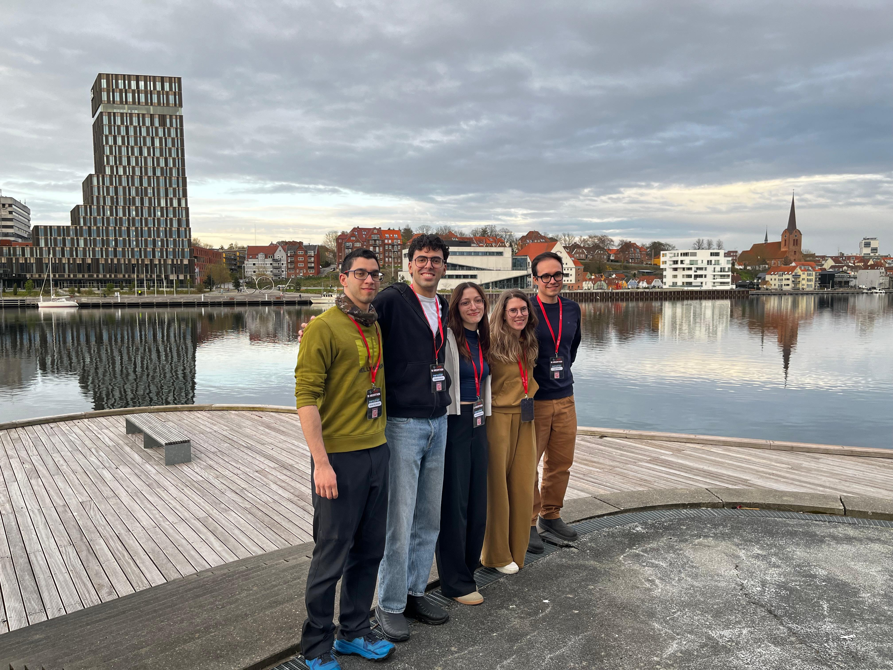

Back to overview

🔗 Try the live demo or explore the source code
Clarix is a Capacity & Sourcing Engine built during the Danfoss Hackathon by a 6-person team, built on a real operational dataset from Danfoss.
The Challenge
Given a large portfolio of active projects competing for shared manufacturing capacity, there was no single tool that unified capacity utilisation, scenario simulation, bottleneck detection, and MRP. Planners had to piece together information from multiple systems.
The Solution
Clarix consolidates this into five Streamlit pages, each addressing a distinct operational concern:
Executive Overview: Portfolio-level KPIs, quarterly revenue, and delivery health.Capacity Planner: Region and project selection with stacked lead time breakdowns across sourcing, production, and transit.Bottlenecks: Ranked work-centre constraints with utilisation thresholds (warning at 85%, critical at 100%).Sourcing & MRP: BOM explosion and ATP-offset back-calculations for raw-material requirements.Ask Clarix: Natural-language queries against the pre-processed canonical tables via the AI agent.
Capacity Planner
Planners select a region (e.g. EMEA-West) and one or more projects to see a stacked lead time breakdown split into sourcing, production, and transit segments. Bottlenecks surface before a delivery date is committed.
Executive Overview
A quarterly snapshot of the full project portfolio: active project counts from Q1 through Q4, expected revenue, and a delivery health score. A dual-line chart plots Delivery Health % against Capacity Risk % over time.

Bottlenecks
A plant-level view of active work centres, nominal capacity lost to scheduled downtime, and a maintenance schedule table with trigger types (corrective vs. preventive), intervals in weeks, and downtime in hours. Utilisation is flagged at 85% (warning) and 100% (critical).

Technical Approach
Clarix is built on Streamlit (Python) following a three-tier, layered architecture. The data layer (clarix.data_loader) ingests and normalises a single Excel workbook (hackathon_dataset.xlsx, 13 sheets, ~26 MB) into eight canonical long-format DataFrames. The domain engine (clarix.engine, pure pandas) runs four named scenarios (all_in, expected, high_confidence, monte_carlo), computes capacity utilisation, detects bottlenecks, and back-calculates raw-material requirements via BOM explosion and ATP offset (MRP). The presentation layer (app.py) composes five independent Streamlit pages on top of those pre-processed tables. The AI agent (clarix.agent) is a tool-calling agent backed by Claude Sonnet 4.5 (Anthropic, primary) or Gemini 2.5 Flash (Google, fallback), with a deterministic planner mode when no API key is configured.
The Team
Six people. One hackathon. Way too many snacks, and at least one karaoke session that nobody will forget. A big thank you to our project case owner Daniel Parapunov for the challenge and support throughout.

